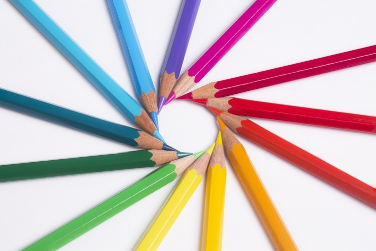

Kolor to najsilniejszy bodziec wzrokowy. Od niego może zależeć nasz humor, a także podejmowane decyzje. Odpowiednio wyeksponowany odgrywa kluczową rolę w podświadomym wywoływaniu danych emocji i zachowań u odbiorcy.
